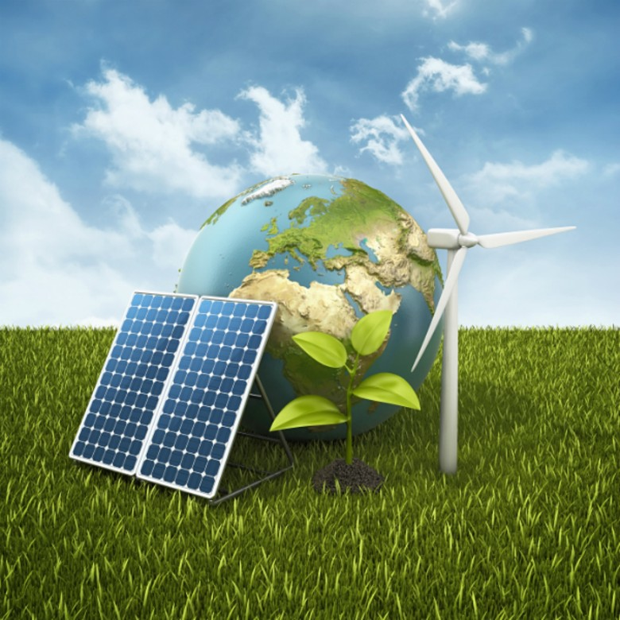
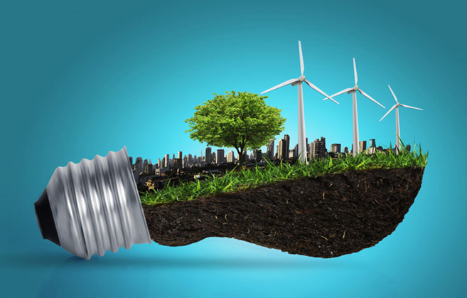

BENEFICIOS DE LA ENERGÍA RENOVABLE PARA EL MEDIO AMBIENTE
Los beneficios de la energía renovable para el medio ambiente son numerosos y significativos. Aquí te enumero algunos de los más destacados:
- Reducción de emisiones de gases de efecto invernadero: Las fuentes de energía renovable, como la solar, eólica, hidroeléctrica y geotérmica, no emiten gases de efecto invernadero durante la generación de electricidad, lo que ayuda a mitigar el cambio climótico.
- Menor contaminación del aire y del agua: A diferencia de las centrales eléctricas que queman combustibles fósiles, las fuentes de energía renovable no liberan contaminantes atmosféricos como óxidos de azufre y óxidos de nitrógeno, ni contaminantes del agua como los vertidos de carbón o petróleo.
- Conservación de recursos naturales: La energí renovable aprovecha fuentes naturales como la luz solar, el viento, el agua y el calor de la Tierra, reduciendo la dependencia de recursos finitos como el carbón, el petróleo y el gas natural.
- Menor huella de carbono: La producción y el despliegue de tecnologías de energía renovable tienen una huella de carbono menor en comparación con los combustibles fósiles, especialmente cuando se considera el ciclo de vida completo de los sistemas, desde la fabricación hasta la eliminación.
- Fomento del desarrollo sostenible: La energía renovable puede proporcionar oportunidades económicas y sociales al fomentar la creación de empleo local, mejorar la seguridad energética y promover la autonomía energítica en comunidades locales y países.
- Adaptación al cambio climático: Dado que las energías renovables no dependen de recursos que puedan agotarse o verse afectados significativamente por el cambio climático, como el agua para la refrigeración en las centrales eléctricas de carbón, son una opción más resistente y adaptable a los impactos del cambio climático.
En resumen, la transición hacia una mayor utilización de energía renovable es fundamental para reducir la huella ambiental de nuestra actividad energética y avanzar hacia un futuro más sostenible y saludable para el planeta y sus habitantes.

